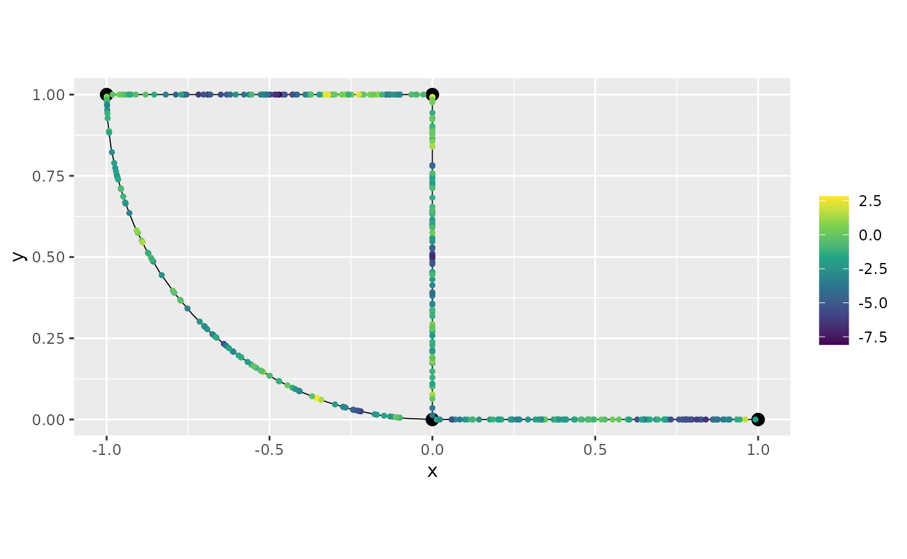

An example with multiple likelihoods in INLA and inlabru
David Bolin, Alexandre B. Simas, and Jonas Wallin
Created: 2024-07-06. Last modified: 2024-10-22.
Source:vignettes/multi_likelihood.Rmd
multi_likelihood.RmdIntroduction
In this vignette we will show how to fit a model with multiple
likelihoods with our INLA and inlabru
implementations. We will consider the following model:
where
are locations on a compact metric graph
,
is a Whittle–Matérn field with alpha=1,
,
are i.i.d. random variables following
,
and
are i.i.d. random variables following
,
finally, we will take
.
A toy dataset
We will start by generating the dataset. Let us load the
MetricGraph package and create the metric graph:
library(MetricGraph)
edge1 <- rbind(c(0,0),c(1,0))
edge2 <- rbind(c(0,0),c(0,1))
edge3 <- rbind(c(0,1),c(-1,1))
theta <- seq(from=pi,to=3*pi/2,length.out = 20)
edge4 <- cbind(sin(theta),1+ cos(theta))
edges = list(edge1, edge2, edge3, edge4)
graph <- metric_graph$new(edges = edges)Let us add 100 random locations in each edge where we will have observations:
obs_per_edge <- 100
obs_loc <- NULL
for(i in 1:(graph$nE)) {
obs_loc <- rbind(obs_loc,
cbind(rep(i,obs_per_edge),
runif(obs_per_edge)))
}We will now sample in these observation locations and plot the latent field:
sigma <- 2
alpha <- 1
nu <- alpha - 0.5
r <- 0.15 # r stands for range
u <- sample_spde(range = r, sigma = sigma, alpha = alpha,
graph = graph, PtE = obs_loc)
graph$plot(X = u, X_loc = obs_loc)Let us now generate the observed responses for both likelihoods,
which we will call, respectively, y1 and y2.
We will also plot the observed responses on the metric graph.
beta1 = 2
beta2 = -2
n_obs <- length(u)
sigma1.e <- 0.2
sigma2.e <- 0.5
y1 <- beta1 + u + sigma1.e * rnorm(n_obs)
y2 <- beta2 + u + sigma2.e * rnorm(n_obs)Let us plot the observations from y1:
graph$plot(X = y1, X_loc = obs_loc)and from y2:
graph$plot(X = y2, X_loc = obs_loc)
Fitting models with multiple likelihoods in R-INLA
We are now in a position to fit the model with our
R-INLA implementation. To this end, we need to add the
observations to the graph, which we will do with the
add_observations() method. We will create a column on the
data.frame to indicate which likelihood the observed
variable belongs to. We will also the intercepts as columns.
df_graph1 <- data.frame(y = y1, intercept_1 = 1, intercept_2 = NA,
edge_number = obs_loc[,1],
distance_on_edge = obs_loc[,2],
likelihood = 1)
df_graph2 <- data.frame(y = y2, intercept_1 = NA,
intercept_2 = 1,
edge_number = obs_loc[,1],
distance_on_edge = obs_loc[,2],
likelihood = 2)
df_graph <- rbind(df_graph1, df_graph2) Let us now add the observations and set the likelihood
column as group:
graph$add_observations(data=df_graph, normalized=TRUE, group = "likelihood")## list()
graph$plot(data="y")Now, we load the R-INLA package and create the
inla model object with the graph_spde
function. By default we have alpha=1.
library(INLA)
spde_model <- graph_spde(graph)Now, we need to create the data object with the
graph_data_spde() function, in which we need to provide a
name for the random effect, which we will call field, and
we need to provide the covariates. We also need to pass the column that
contains the number of the likelihood for the data
data_spde <- graph_data_spde(graph_spde = spde_model,
name = "field", likelihood_col = "likelihood",
resp_col = "y",
covariates = c("intercept_1", "intercept_2"))The remaining is standard in R-INLA. We create the
formula object and the inla.stack objects with the
inla.stack() function.
Let us start by creating the formula:
f.s <- y ~ -1 + f(intercept_1, model = "linear") +
f(intercept_2, model = "linear") +
f(field, model = spde_model)Let us now create the inla.stack objects, one for each
likelihood. To such an end, we simply supply the data in
data_spde obtained from using
graph_data_spde:
stk_dat1 <- inla.stack(data = data_spde[[1]][["data"]],
A = data_spde[[1]][["basis"]],
effects = data_spde[[1]][["index"]]
)
stk_dat2 <- inla.stack(data = data_spde[[2]][["data"]],
A = data_spde[[2]][["basis"]],
effects = data_spde[[2]][["index"]]
)
stk_dat <- inla.stack(stk_dat1, stk_dat2) Now, we use the inla.stack.data():
data_stk <- inla.stack.data(stk_dat)Finally, we fit the model:
spde_fit <- inla(f.s, family = c("gaussian", "gaussian"),
data = data_stk, control.predictor=list(A=inla.stack.A(stk_dat)))Let us now obtain the estimates in the original scale by using the
spde_metric_graph_result() function, then taking a
summary():
spde_result <- spde_metric_graph_result(spde_fit, "field", spde_model)
summary(spde_result)## mean sd 0.025quant 0.5quant 0.975quant mode
## sigma 1.937610 0.1793230 1.6152800 1.926400 2.316060 1.889680
## range 0.134472 0.0270122 0.0907362 0.131179 0.196442 0.124442We will now compare the means of the estimated values with the true values:
result_df <- data.frame(
parameter = c("std.dev", "range"),
true = c(sigma, r),
mean = c(
spde_result$summary.sigma$mean,
spde_result$summary.range$mean
),
mode = c(
spde_result$summary.sigma$mode,
spde_result$summary.range$mode
)
)
print(result_df)## parameter true mean mode
## 1 std.dev 2.00 1.9376056 1.8896829
## 2 range 0.15 0.1344716 0.1244416Let us now look at the estimates of the measurement errors and compare with the true ones:
meas_err_df <- data.frame(
parameter = c("sigma1.e", "sigma2.e"),
true = c(sigma1.e, sigma2.e),
mean = sqrt(1/spde_fit$summary.hyperpar$mean[1:2]),
mode = sqrt(1/spde_fit$summary.hyperpar$mode[1:2])
)
print(meas_err_df)## parameter true mean mode
## 1 sigma1.e 0.2 0.2231564 0.2379984
## 2 sigma2.e 0.5 0.4963884 0.4986200Finally, let us look at the estimates of the intercepts:
intercept_df <- data.frame(
parameter = c("beta1", "beta2"),
true = c(beta1, beta2),
mean = spde_fit$summary.fixed$mean,
mode = spde_fit$summary.fixed$mode
)
print(intercept_df)## parameter true mean mode
## 1 beta1 2 2.083174 2.083395
## 2 beta2 -2 -1.919985 -1.919765Fitting models with multiple likelihoods in
inlabru
For this section recall the objects spde_model obtained
above. Let us create a new data object. Observe that for
inlabru we do not need to provide the
covariates argument.
data_spde_bru <- graph_data_spde(graph_spde = spde_model,
name = "field", likelihood_col = "likelihood",
resp_col = "y", loc_name = "loc")We begin by loading inlabru library and setting up the
likelihoods. To this end, we will use the first entry of
data_spde_bru to supply the data for the first likelihood,
and the second entry to supply the data for the second likelihood.
## Loading required package: fmesher
lik1 <- like(formula = y ~ intercept_1 + field,
data=data_spde_bru[[1]][["data"]])
lik2 <- like(formula = y ~ intercept_2 + field,
data=data_spde_bru[[2]][["data"]]) Now, we create the model component:
cmp <- ~ -1 + intercept_1(intercept_1) +
intercept_2(intercept_2) +
field(loc, model = spde_model)Then, we fit the model:
spde_bru_fit <- bru(cmp, lik1, lik2)Let us now obtain the estimates in the original scale by using the
spde_metric_graph_result() function, then taking a
summary():
spde_bru_result <- spde_metric_graph_result(spde_bru_fit, "field", spde_model)
summary(spde_bru_result)## mean sd 0.025quant 0.5quant 0.975quant mode
## sigma 1.937710 0.1751650 1.6211700 1.926650 2.311370 1.886870
## range 0.134497 0.0271169 0.0905475 0.131211 0.196667 0.124504We will now compare the means of the estimated values with the true values:
result_bru_df <- data.frame(
parameter = c("std.dev", "range"),
true = c(sigma, r),
mean = c(
spde_bru_result$summary.sigma$mean,
spde_bru_result$summary.range$mean
),
mode = c(
spde_bru_result$summary.sigma$mode,
spde_bru_result$summary.range$mode
)
)
print(result_bru_df)## parameter true mean mode
## 1 std.dev 2.00 1.9377083 1.8868663
## 2 range 0.15 0.1344971 0.1245042Let us now look at the estimates of the measurement errors and compare with the true ones:
meas_err_bru_df <- data.frame(
parameter = c("sigma1.e", "sigma2.e"),
true = c(sigma1.e, sigma2.e),
mean = sqrt(1/spde_bru_fit$summary.hyperpar$mean[1:2]),
mode = sqrt(1/spde_bru_fit$summary.hyperpar$mode[1:2])
)
print(meas_err_bru_df)## parameter true mean mode
## 1 sigma1.e 0.2 0.2231594 0.2379820
## 2 sigma2.e 0.5 0.4963947 0.4985708Finally, let us look at the estimates of the intercepts:
intercept_df <- data.frame(
parameter = c("beta1", "beta2"),
true = c(beta1, beta2),
mean = spde_bru_fit$summary.fixed$mean,
mode = spde_bru_fit$summary.fixed$mode
)
print(intercept_df)## parameter true mean mode
## 1 beta1 2 2.083166 2.083389
## 2 beta2 -2 -1.919993 -1.919771A toy dataset with multiple likelihoods and replicates
Let us now proceed similarly, but now we will consider a case in which we have multiple likelihoods and replicates.
To simplify exposition, we will use the same base graph. So, we begin by clearing the observations.
graph$clear_observations()We will use the same observation locations as for the previous cases. Let us sample 10 replicates:
sigma_rep <- 1.5
alpha_rep <- 1
nu_rep <- alpha_rep - 0.5
r_rep <- 0.2 # r stands for range
kappa_rep <- sqrt(8 * nu_rep) / r_rep
n_repl <- 10
u_rep <- sample_spde(range = r_rep, sigma = sigma_rep,
alpha = alpha_rep,
graph = graph, PtE = obs_loc,
nsim = n_repl)Let us now generate the observed responses, which we will call
y_rep.
Fitting the model with multiple likelihoods and replicates in
R-INLA
The sample_spde() function returns a matrix in which
each replicate is a column. We need to stack the columns together and a
column to indicate the replicat. Further, we need to do it for each
likelihood:
dl1_graph <- lapply(1:ncol(y1_rep), function(i){data.frame(y = y1_rep[,i],
edge_number = obs_loc[,1],
distance_on_edge = obs_loc[,2],
likelihood = 1,
intercept_1 = 1,
intercept_2 = NA,
repl = i)})
dl1_graph <- do.call(rbind, dl1_graph)and
dl2_graph <- lapply(1:ncol(y2_rep), function(i){data.frame(y = y2_rep[,i],
edge_number = obs_loc[,1],
distance_on_edge = obs_loc[,2],
likelihood = 2,
intercept_1 = NA,
intercept_2 = 1,
repl = i)})
dl2_graph <- do.call(rbind, dl2_graph)We now join them:
dl_graph <- rbind(dl1_graph, dl2_graph)We can now add the the observations by setting the group
argument to c("repl", "likelihood"):
graph$add_observations(data = dl_graph, normalized=TRUE,
group = c("repl", "likelihood"),
edge_number = "edge_number",
distance_on_edge = "distance_on_edge")## list()Let us now create the model object:
spde_model_rep <- graph_spde(graph)Let us first consider a case in which we do not use all replicates. Then, we consider the case in which we use all replicates.
Thus, let us assume we want only to consider replicates 1, 3, 5, 7
and 9. To this end, we the index object by using the
graph_data_spde() function with the argument
repl set to the replicates we want, in this case
c(1,3,5,7,9). Observe that here we need to pass
repl_col, as the internal grouping variable is not the
replicate variable.
data_spde_repl <- graph_data_spde(graph_spde=spde_model_rep,
name="field", repl = c(1,3,5,7,9), repl_col = "repl",
likelihood_col = "likelihood", resp_col = "y",
covariates = c("intercept_1", "intercept_2"))Next, we create the stack objects, remembering that we need to input
the components from data_spde for each likelihood:
stk_dat_rep1 <- inla.stack(data = data_spde_repl[[1]][["data"]],
A = data_spde_repl[[1]][["basis"]],
effects = data_spde_repl[[1]][["index"]]
)
stk_dat_rep2 <- inla.stack(data = data_spde_repl[[2]][["data"]],
A = data_spde_repl[[2]][["basis"]],
effects = data_spde_repl[[2]][["index"]]
)
stk_dat_rep <- inla.stack(stk_dat_rep1, stk_dat_rep2)We now create the formula object, adding the name of the field (in
our case field) attached with .repl a the
replicate argument inside the f()
function.
f_s_rep <- y ~ -1 + intercept_1 + intercept_2 +
f(field, model = spde_model_rep,
replicate = field.repl)Then, we create the stack object with The
inla.stack.data() function:
data_stk_rep <- inla.stack.data(stk_dat_rep)Now, we fit the model:
spde_fit_rep <- inla(f_s_rep, family = c("gaussian", "gaussian"),
data = data_stk_rep,
control.predictor=list(A=inla.stack.A(stk_dat_rep)))Let us see the estimated values in the original scale:
spde_result_rep <- spde_metric_graph_result(spde_fit_rep,
"field", spde_model_rep)
summary(spde_result_rep)## mean sd 0.025quant 0.5quant 0.975quant mode
## sigma 1.490560 0.0714894 1.358820 1.488090 1.638960 1.492110
## range 0.197454 0.0205546 0.160823 0.196092 0.241429 0.193212Let us compare with the true values:
result_df_rep <- data.frame(
parameter = c("std.dev", "range"),
true = c(sigma_rep, r_rep),
mean = c(
spde_result_rep$summary.sigma$mean,
spde_result_rep$summary.range$mean
),
mode = c(
spde_result_rep$summary.sigma$mode,
spde_result_rep$summary.range$mode
)
)
print(result_df_rep)## parameter true mean mode
## 1 std.dev 1.5 1.4905624 1.4921103
## 2 range 0.2 0.1974539 0.1932121Let us now look at the estimates of the measurement errors and compare with the true ones:
meas_err_df <- data.frame(
parameter = c("sigma1.e", "sigma2.e"),
true = c(sigma1.e, sigma2.e),
mean = sqrt(1/spde_fit_rep$summary.hyperpar$mean[1:2]),
mode = sqrt(1/spde_fit_rep$summary.hyperpar$mode[1:2])
)
print(meas_err_df)## parameter true mean mode
## 1 sigma1.e 0.2 0.1935081 0.1946181
## 2 sigma2.e 0.5 0.4886450 0.4891630Finally, let us look at the estimates of the intercepts:
intercept_df <- data.frame(
parameter = c("beta1", "beta2"),
true = c(beta1, beta2),
mean = spde_fit_rep$summary.fixed$mean,
mode = spde_fit_rep$summary.fixed$mode
)
print(intercept_df)## parameter true mean mode
## 1 beta1 2 1.846546 1.846466
## 2 beta2 -2 -2.156743 -2.156823Fitting models with multiple likelihoods and replicates in
inlabru
For this section recall the objects spde_model_rep
obtained above. Let us create a new data object:
data_spde_bru_repl <- graph_data_spde(graph_spde = spde_model_rep,
name="field", loc_name = "loc",
repl = c(1,3,5,7,9), repl_col = "repl",
likelihood_col = "likelihood", resp_col = "y")Let us obtain the repl indexes from the
data_spde_bru_repl object:
repl <- data_spde_bru_repl[["repl"]]Let us now construct the likelihoods:
lik1_repl <- like(formula = y ~ intercept_1 + field,
data=data_spde_bru_repl[[1]][["data"]])
lik2_repl <- like(formula = y ~ intercept_2 + field,
data=data_spde_bru_repl[[2]][["data"]]) Now, we create the model component, using the replicates index we obtained above:
cmp_repl <- ~ -1 + intercept_1(intercept_1) +
intercept_2(intercept_2) +
field(loc, model = spde_model_rep, replicate = repl)Then, we fit the model:
spde_bru_fit_repl <- bru(cmp_repl, lik1_repl, lik2_repl)Let us now obtain the estimates in the original scale by using the
spde_metric_graph_result() function, then taking a
summary():
spde_bru_result_repl <- spde_metric_graph_result(spde_bru_fit_repl, "field", spde_model_rep)
summary(spde_bru_result_repl)## mean sd 0.025quant 0.5quant 0.975quant mode
## sigma 1.489800 0.0723742 1.35400 1.487260 1.639630 1.482470
## range 0.197289 0.0205155 0.16059 0.196029 0.241065 0.193353We will now compare the means of the estimated values with the true values:
result_bru_repl_df <- data.frame(
parameter = c("std.dev", "range"),
true = c(sigma_rep, r_rep),
mean = c(
spde_bru_result_repl$summary.sigma$mean,
spde_bru_result_repl$summary.range$mean
),
mode = c(
spde_bru_result_repl$summary.sigma$mode,
spde_bru_result_repl$summary.range$mode
)
)
print(result_bru_repl_df)## parameter true mean mode
## 1 std.dev 1.5 1.4898015 1.4824750
## 2 range 0.2 0.1972894 0.1933532Let us now look at the estimates of the measurement errors and compare with the true ones:
meas_err_bru_repl_df <- data.frame(
parameter = c("sigma1.e", "sigma2.e"),
true = c(sigma1.e, sigma2.e),
mean = sqrt(1/spde_bru_fit_repl$summary.hyperpar$mean[1:2]),
mode = sqrt(1/spde_bru_fit_repl$summary.hyperpar$mode[1:2])
)
print(meas_err_bru_repl_df)## parameter true mean mode
## 1 sigma1.e 0.2 0.1935666 0.1949572
## 2 sigma2.e 0.5 0.4885651 0.4890156Finally, let us look at the estimbates of the intercepts:
intercept_repl_df <- data.frame(
parameter = c("beta1", "beta2"),
true = c(beta1, beta2),
mean = spde_bru_fit_repl$summary.fixed$mean,
mode = spde_bru_fit_repl$summary.fixed$mode
)
print(intercept_repl_df)## parameter true mean mode
## 1 beta1 2 1.846548 1.846469
## 2 beta2 -2 -2.156741 -2.156820